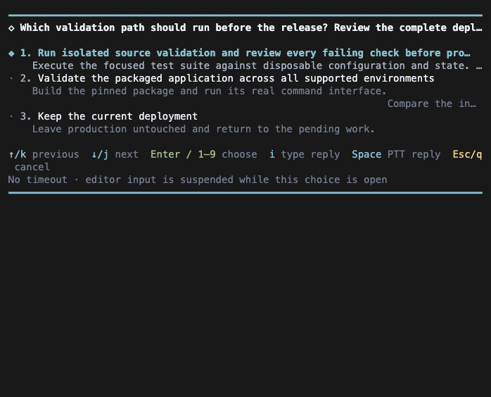
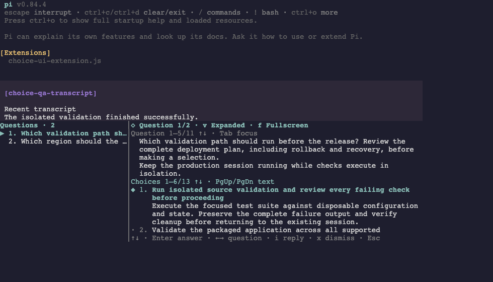

sessions
Choices, control and continuity
Long-running agents need to ask questions without stalling, keep going without supervision, survive updates and restarts, and move between machines. These extensions handle the life of a session.
Asking questions
interactive_choice puts a bounded question in front of you and waits; async_choice posts one or many questions and lets the agent carry on. Both can be answered from almost anywhere.


/choices opens the sidebar; each answer is injected back to the agent as a steering message.- Choices are spoken when speech is on, and can be answered by push-to-talk.
- An Omni keystroke cast from a phone or watch, or a ring controller, maps onto the same actions. Agent Utils only listens; it never owns those devices.
- Under the agent orchestrator, questions are mirrored to its mobile decision queue; with the Paratenic session host, any Agent Host Protocol client can answer. Whichever answers first settles the question exactly once.
- Async questions survive a reload, and obsolete ones can be withdrawn.
Working unattended
| Command | Does |
|---|---|
/compact-next | Compact at the next finished reply or tool batch instead of aborting work, then resume without a new prompt where possible |
/endless [delay=60] | When the agent has fully settled, nudge it again after a delay, optionally compacting first; /endless off stops |
/after 20m prompt | Deliver a prompt or command once, later, from durable session entries that survive a restart; no cron or background jobs |
/git-behind | Warn any agent whose checkout falls well behind its default branch |
| Copilot token refresh | When a GitHub Copilot token goes missing mid-session, reload the stored credentials and retry the request once instead of stopping |
Updating and restarting
| Command | Does |
|---|---|
/update | Update Pi packages, reload the runtime and activate new tools |
/reload-tools | Reload extensions and make every registered tool visible to the model |
/restart | Re-exec Pi in place on the same session, keeping runtime flags but not the original prompt or @file arguments, so launch instructions are not replayed |
Restart replaces the process rather than spawning a second Pi, so nothing competes for the terminal. Agents can request all three through tools; startup auto-update is opt-in.
Models and effort
Operators switch freely; agents are fenced in.
| For | Command or tool | Boundary |
|---|---|---|
| Operator | /m provider/model, /effort, /fast | The full model registry; /fast toggles a configured -fast sibling |
| Agent | self_set_model, self_list_models | Only models on a whitelist in selfModelSelection.models; a missing or empty list means no switches |
| Agent | self_set_effort | Only when the operator asked for it |
Moving a session
/session-fork and the pi-session command copy a Pi session, history unchanged, to a worktree, another directory or another machine over SSH, set up Git at the exact commit and optionally open it in a terminal workspace:
pi-session fork --session id --remote host --herdr --focuspi-session pull --from host --session id # from the destination, no reverse SSH pi-session status request-idEach fork has a stable request id with a durable receipt, so an interrupted fork can be retried without duplicating it, and the copied history ends with a notice of where it moved.
Shells and pipes
/nix devshell,nix_devshell_enableand the one-shotbash_devshellroute an agent's shell commands through a repository's flake shell only when needed, instead of loading it on every start./pipe cmd=commandpasses what you type through a command before it is sent, with a preview to send, send raw or cancel;/fix autois the shorthand for a text-fixing command.- Settings under
agentUtilscan contain typed special forms ($envPresent,$envBool,$boolCommandand others) resolved in memory at start-up, without ever rewriting the file. - Sessions register with the agent orchestrator when asked, and get its MCP tools through one child process with a scoped identity.